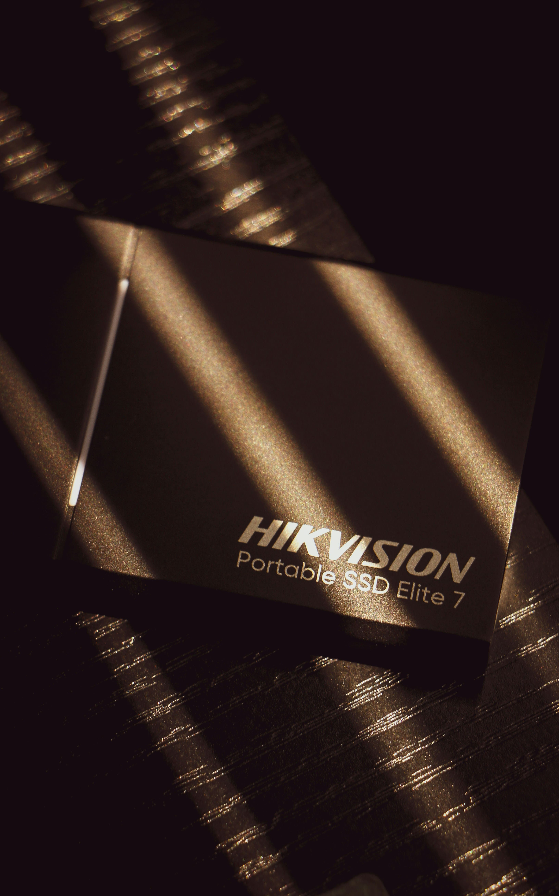
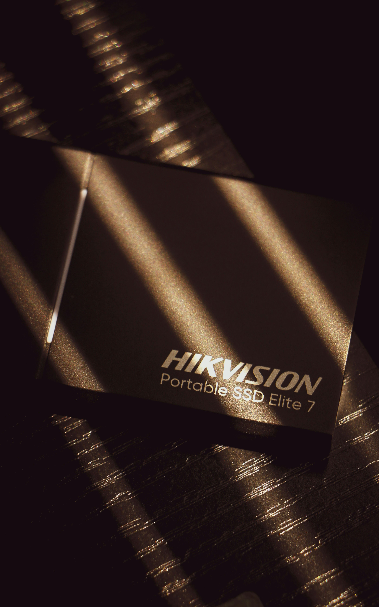

Lost Data? We Help You Get It Back
Professional data recovery for hard drives, SSDs, phones, and more. Fast, secure, and trusted by hundreds of clients.
Request RecoveryOur Services
- Damaged Hard Drives
- SSDs & USB drives
- Phone internal memory
- Formatted/Deleted files
- RAID/NAS systems
All recoveries are performed in partnership with a certified US facility.
What Our Clients Say
“Data Recov saved my business files after a hard drive crash. Fast and professional!”
“I thought my photos were gone forever. Thank you, Data Recov!”